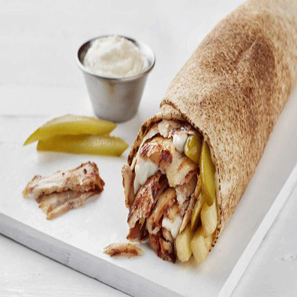

I am introducing a famous lebanese cuisine recipe called Shawarma. It is usually wrapped with garlic sauce and veggies in a pita bread. All my family love it, I prepare it all the time since I am from lebanese origins.

Chicken Shawarma Sandwich with Garlic SauceChicken Shawarma Dish
In a glass baking dish, mix together the malt vinegar, ¼ cup yogurt, vegetable oil, mixed spice, cardamom, salt and pepper. Place the chicken thighs into the mixture and turn to coat. Cover and marinate in the refrigerator for at least 4 hours or overnight.
Preheat the oven to 350 degrees F (175 ° C). In a small bowl, mix together the tahini, ¼ cup yogurt, garlic, lemon juice, olive oil, and parsley. Season with salt and pepper, taste, and adjust flavors if desired. Cover and refrigerate.
Cover the chicken and bake in the marinade for 30 minutes, turning once. Uncover, and cook for an additional 5 to 10 minutes, or until chicken is browned and cooked through. Remove from the dish, and cut into slices.
Place sliced chicken, tomato, onion, and lettuce onto pita breads. Roll up, and top with the tahini sauce.
Nutrition Facts:
Per Serving: 402 calories; 15.2 g fat; 44 g carbohydrates; 23.3 g protein; 58 mg cholesterol; 420 mg sodium.